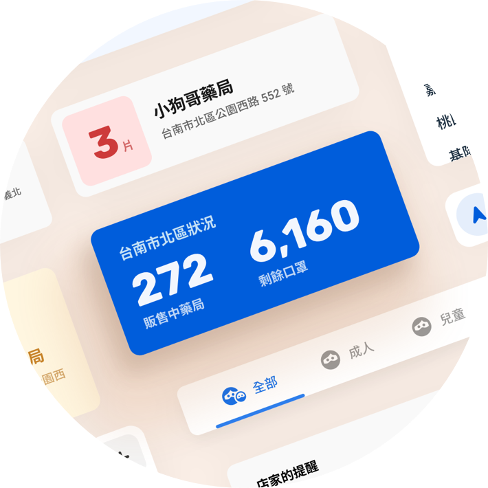
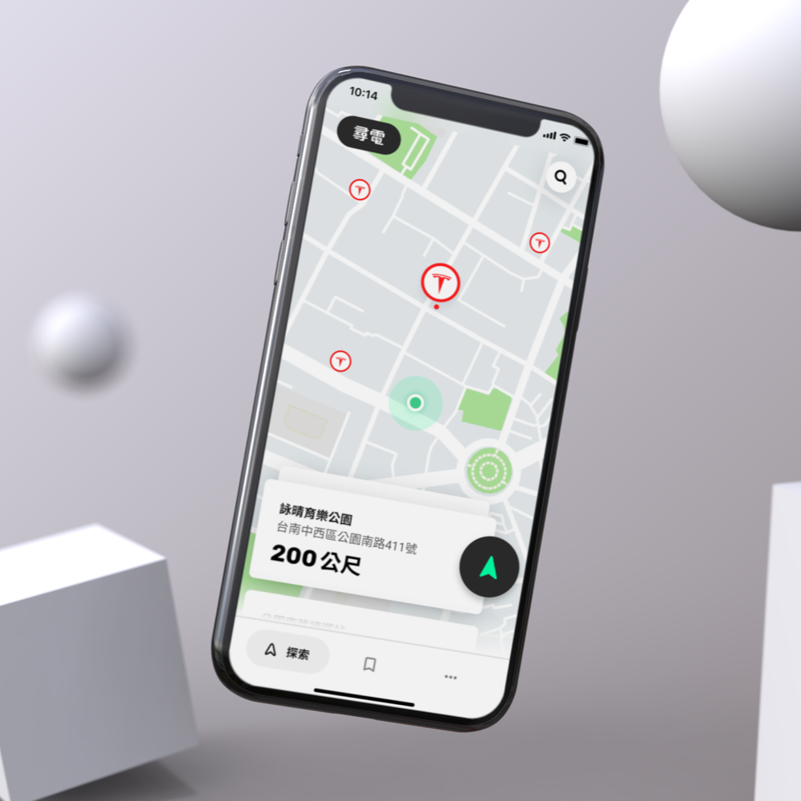
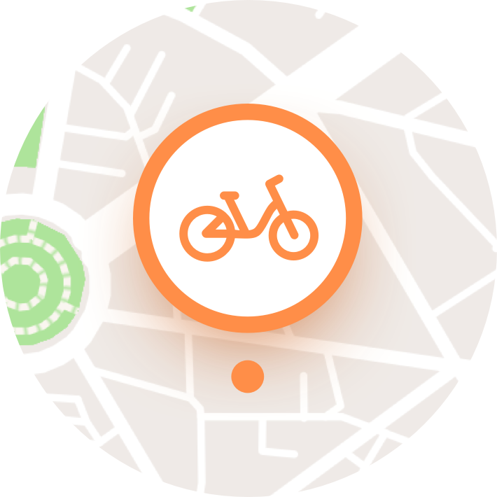

關於
作品
聯絡
部落格
關於
作品
聯絡
部落格
更改
妳
的多性別選項
詹喆麟是位來自台南的設計師，人很好，熱情又外向，值得
妳
來看看他的故事。
他是個土生土長台南人，今年 20 歲，有著 7 年設計經驗。專注於創作精緻、現代與穩重兼具的使用者介面。
了解詹喆麟
詹喆麟
著重於
打造
優質
使用者介面。
以時下
國際潮流
設計手法，
創作
高品質
並高度
在地化的
設計
作品。



探索作品
透過
貼近人心
的思考，
打造
友善、
易懂
且實用的
使用者介面。
我的
作品
以視覺
和體驗上
的完善
著稱，
也因此
獲得
不少
讚譽
與肯定。
我曾協助關鍵評論網媒體集團打造內部專用工具。為該公司提供了現代、效率與易用兼顧的優質設計。
我的作品曾被上述媒體、部落格或單位報導、使用或推薦。
了解更多
與我接觸
取得我的聯絡資訊，以及追蹤我的社群帳號！
取得聯絡資訊
我的
Instagram
目前狀態
不接受新工作
該如何稱呼您？
請選擇最適合您的性別。網站會依照您的選擇來稱呼您。
瞭解了，謝謝
妳
妳
可以隨時在右上角的選單內重新選擇
妳
的多性別選項。
妳
可以隨時在網頁最底部的「更改
妳
的多性別選項」內，重新選擇
妳
的多性別選項。
更改
妳
的多性別選項
重新選擇最適合您的性別。網站會依照您的選擇來稱呼您。
女性
男性
開始瀏覽網站
完成